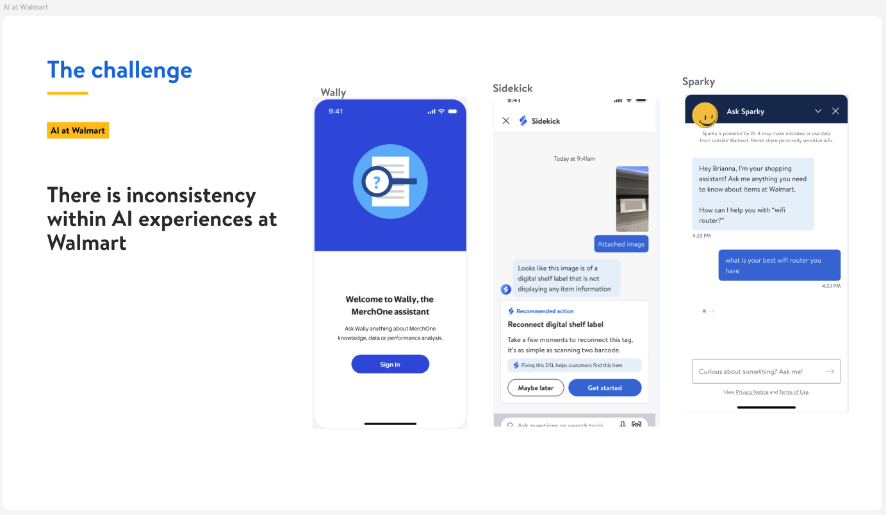
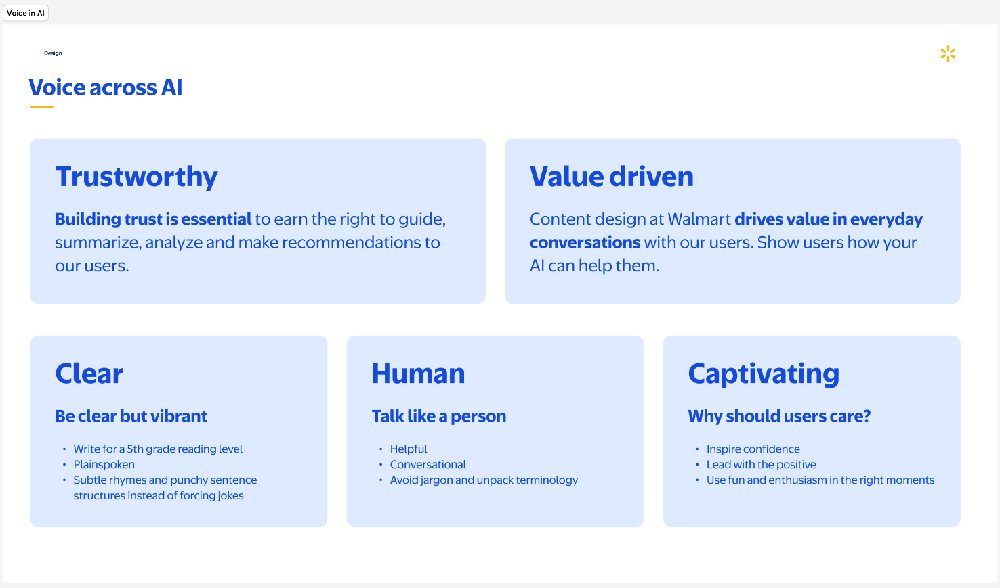
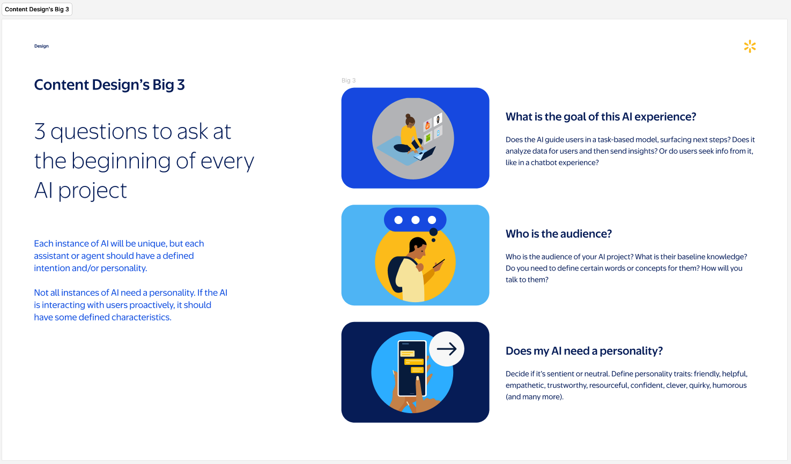

Walmart · AI Strategy
As Walmart moved AI-powered features from experiments to production, a critical gap emerged: there were no standards for how AI should communicate. Customer-facing AI, associate-facing AI and partner-facing AI were all making independent decisions about voice, tone, persona and behavior — with no shared framework to ensure consistency or trust.
The risk wasn't just inconsistency. It was trust. When AI speaks in too many voices, or says things a brand would never say, customers notice. At Walmart's scale — serving millions of customers and hundreds of thousands of associates — that inconsistency compounds fast.
"Does this AI need a personality — and if so, what should it sound like?"
The risk wasn't just inconsistency. It was trust. When AI speaks in too many voices, or says things a brand would never say, customers notice. At Walmart's scale — serving millions of customers and hundreds of thousands of associates — that inconsistency compounds fast.
"Does this AI need a personality — and if so, what should it sound like?"
That was the question no one had answered. I stepped in to answer it before it became a problem in production.

Wally (associate tool), Sidekick (store operations), and Sparky (customer-facing) — all speaking differently, with no shared framework. This slide from the Content & Conversation Design for AI deck was the starting point.

The five voice principles established for all AI products at Walmart — designed to apply whether a human writes the content or AI generates it.

Three questions every product team must answer before building: What is the goal? Who is the audience? Does my AI need a personality? This became the entry point to the framework for any new AI project.
I built a comprehensive AI content framework from the ground up — designed to work across every AI product in Walmart's ecosystem, from generative customer service to associate-facing tools to partner and supplier-facing AI.
A Figma-based reference guiding product teams on whether AI should speak in a given context, and if so, how. Addressed persona, formality, proactivity and error states.
A complete map of every AI product in production, categorized by audience, interaction pattern and voice requirements — giving teams a shared language to talk about AI content.
Training-ready guidelines for writing in Walmart's voice — designed to work whether a human writes the content or AI generates it. Covered tone, boundaries and error handling.
The framework was built to be usable without me in the room — detailed enough that any product team could apply it independently, but principled enough that it would hold up as AI capabilities evolved.
One of the most contested questions in the framework was around AI persona. Some teams wanted their AI to feel distinctly branded — a named character with a defined personality. Others wanted it invisible, just helpful. Both positions had merit.
The framework didn't mandate one answer. Instead, it gave teams a decision model: a set of criteria for when a distinct AI persona adds value versus when it creates distance or distrust. That kind of nuance — acknowledging that the right answer depends on context — is what makes a framework durable.
The guardrails section was equally important. It defined what AI should never say, how it should handle uncertainty, when to escalate to a human and how to communicate limitations without eroding user confidence.